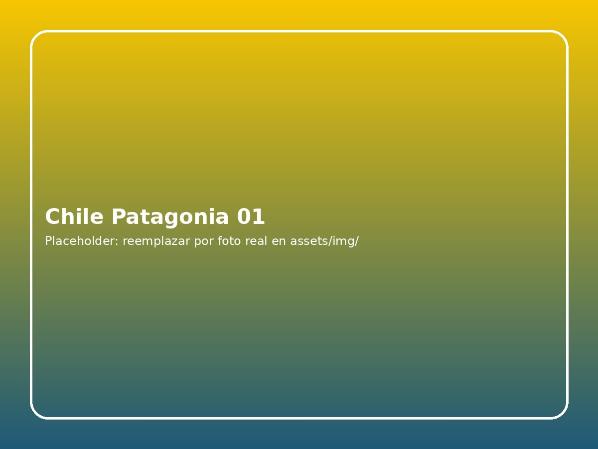

6 días / 5 noches · Puerto Natales y Punta Arenas · Vuelos opcionales
Información esencial
DestinoPuerto Natales, Torres del Paine y Punta Arenas
Duración6 días / 5 noches
Alojamiento4 noches Puerto Natales + 1 Punta Arenas
Habitación baseDoble (2 adultos); otras ocupaciones por cotizar
VuelosOpcionales · no incluidos
AeropuertoPunta Arenas (PUQ)
ModalidadVisitas panorámicas y navegación condicionada
DificultadActividades escénicas sin trekking exigente
AccesosEntrada Torres del Paine no incluida
Descubre la Patagonia chilena
Explora Torres del Paine, el glaciar Grey y los paisajes australes en un recorrido de seis días, con base en Puerto Natales y Punta Arenas.
Programa terrestre con cinco noches de alojamiento y desayuno, traslados y excursiones indicadas. Vuelos opcionales con destino Punta Arenas. La navegación al glaciar Grey y los accesos a áreas protegidas están sujetos a las reglas de operación y condiciones meteorológicas. Las alternativas de alojamiento se eligen durante la personalización del paquete.
Imágenes de Patagonia y Torres del Paine

Torres del Paine, Chile
Itinerario día a día
Día 1
Llegada a Punta Arenas y traslado a Puerto Natales
Bienvenida en la Región de Magallanes. El traslado terrestre desde Punta Arenas (PUQ) hasta Puerto Natales recorre aproximadamente 250 km y requiere cerca de 3 horas y 15 minutos. Los horarios de este día se adaptan al vuelo de llegada y al servicio reservado.
Llegada al Aeropuerto Presidente Carlos Ibáñez del Campo (PUQ) · Recepción, retiro de equipaje y coordinación del traslado. El vuelo no está incluido; recomendamos llegar de mañana o a primera hora de la tarde.
Salida hacia Puerto Natales · Embarque en transporte coordinado o bus interurbano; se informará al pasajero la modalidad exacta, el punto de encuentro y los datos del conductor.
Ruta por la estepa patagónica · Viaje por Ruta 9 entre Punta Arenas y Puerto Natales. Las paradas se ajustan al servicio y al clima.
Registro en alojamiento de Puerto Natales · Entrega de habitaciones según horarios del hotel y disponibilidad. Primera de cuatro noches previstas en Puerto Natales.
Orientación del circuito · Información sobre recogidas, ropa impermeable, seguridad, entradas a Torres del Paine y horarios del glaciar Grey. Cena libre.
Alojamiento / comidas: Puerto Natales · noche 1 de 4 · desayuno incluido desde la mañana siguiente.
Día 2
Torres del Paine panorámico: lagos, miradores y Cuernos del Paine
Jornada escénica por los principales miradores habilitados del Parque Nacional Torres del Paine, diseñada para conocer el paisaje sin exigir el trekking a Base Torres. Los puntos exactos y el orden dependerán del circuito elegido, del clima y de las reglas de CONAF.
Desayuno y preparación · Desayuno en el alojamiento o box breakfast según el horario acordado; llevar agua, abrigo, impermeable y almuerzo o dinero para comprarlo.
Recojo en Puerto Natales · Salida en transporte turístico hacia Torres del Paine. Tiempo terrestre aproximado de 1 h 30 a 2 h 30 según la portería.
Ingreso al parque y miradores orientales · Control de acceso y primeras vistas del macizo y de los paisajes de Laguna Amarga o lago Sarmiento, según la ruta disponible. Entrada al parque no incluida.
Miradores del macizo Paine y lago Nordenskjöld · Paradas fotográficas donde la seguridad y los accesos permitan contemplar los Cuernos del Paine.
Pausa para almuerzo · Almuerzo libre o box lunch contratado por cuenta del viajero; no se garantiza restaurante dentro del parque.
Lago Pehoé y sector Salto Grande · Recorrido por miradores habilitados y senderos cortos; visitas condicionadas por viento, lluvia y restricciones de acceso.
Regreso a Puerto Natales · Traslado terrestre y llegada al alojamiento. Horario sujeto a la ubicación final del tour y al tráfico.
Alojamiento / comidas: Puerto Natales · noche 2 de 4 · desayuno incluido; almuerzo y cena libres.
Día 3
Navegación al glaciar Grey: témpanos y Campo de Hielo Sur
Salida hacia el sector Lago Grey para realizar la navegación ida y vuelta. Se utiliza como referencia la segunda salida publicada por Hotel Lago Grey para octubre de 2026 a abril de 2027; solo se confirma cuando el proveedor asigna fecha, cupo y embarque.
Desayuno y equipo de abrigo · Ropa térmica, cortaviento, calzado cerrado e impermeable. Si el hotel programa la salida antes del desayuno, solicitar desayuno para llevar.
Salida desde Puerto Natales · Traslado al sector Hotel Lago Grey por ruta escénica; el recorrido y sus accesos pueden requerir entre 2 h 30 y 3 h.
Llegada al sector Grey · Presentación al operador, validación de documentos y preparación. El acceso al embarcadero puede incluir caminata por playa de grava de 30 a 45 minutos.
Check-in de navegación · horario de referencia · Registro según las instrucciones del operador, embarque y normas de seguridad. Hay que presentarse a la hora efectivamente confirmada.
Navegación de ida y vuelta por lago Grey · Observación de témpanos, entorno del macizo Paine y, si el tiempo permite, vistas del frente del glaciar Grey. Ruta y acercamiento dependen de la capitanía y del operador.
Desembarque y retorno · Regreso terrestre a Puerto Natales con margen por clima y controles. En caso de suspensión se gestionará una alternativa o el ajuste de servicio conforme a condiciones de reserva.
Alojamiento / comidas: Puerto Natales · noche 3 de 4 · navegación prevista, condicionada por clima y mínimo operativo.
Día 4
Cueva del Milodón y paseo cultural por Puerto Natales
Día de ritmo moderado para conocer el Monumento Natural Cueva del Milodón y disponer de tiempo libre en Puerto Natales. No se presupone que el ingreso a la cueva esté incluido hasta confirmar el presupuesto del proveedor.
Desayuno · Desayuno en el alojamiento y preparación para una excursión de media jornada.
Salida a Cueva del Milodón · Recorrido terrestre hacia el monumento natural, a aproximadamente 25 km de Puerto Natales.
Senderos, cueva principal e interpretación · Recorrido guiado por la cueva y paneles interpretativos sobre su historia, paleontología y paisaje; el circuito específico depende de las áreas habilitadas.
Regreso y almuerzo libre en Puerto Natales · Tiempo para disfrutar de la gastronomía local sin obligación de compra en un restaurante concreto.
Costanera, esculturas y centro urbano · Tiempo libre para pasear por la costanera del seno Última Esperanza, visitar tiendas locales o descansar; actividades extras no incluidas.
Información del traslado a Punta Arenas · Coordinación de salida temprana del día siguiente y alojamiento de la quinta noche en Punta Arenas, que requiere confirmación antes de la reserva.
Alojamiento / comidas: Puerto Natales · noche 4 de 4 · cena libre.
Día 5
Puerto Natales → Punta Arenas; Isla Magdalena opcional en temporada
Traslado hacia Punta Arenas y visita libre por la ciudad. En temporada puede añadirse —con precio separado— una navegación a Isla Magdalena, hogar de pingüinos magallánicos. No se utiliza la antigua pingüinera de Seno Otway, que no opera como atractivo turístico.
Desayuno o box breakfast y check-out · Salida temprana de Puerto Natales con el equipaje. El hotel podrá ofrecer desayuno para llevar si el horario lo permite.
Traslado terrestre a Punta Arenas · Servicio interurbano o turístico coordinado, sujeto a itinerario y plazas. El recorrido habitual tarda alrededor de 3 h 15 min.
Llegada, resguardo de maletas y tiempo libre · Acercamiento al alojamiento previsto de Punta Arenas y resguardo de equipaje según condiciones. El hotel y tipo de habitación de esta noche deben confirmarse por categoría.
Check-in de navegación a Isla Magdalena · Presentación en Muelle Prat si el pasajero contrató el adicional y el proveedor habilitó salida vespertina.
Estrecho de Magallanes e Isla Magdalena · Zarpe, avistamiento y caminata regulada; esta experiencia NO está incluida en el precio base y depende de la temporada (primavera–verano), cupos y meteorología.
Centro histórico y costanera de Punta Arenas · Paseo libre por Plaza Muñoz Gamero y zona urbana; comidas, entradas y transporte independiente por cuenta del viajero.
Registro definitivo y descanso · Noche de hotel en Punta Arenas, con nombre de establecimiento por confirmar antes de validar la reserva.
Alojamiento / comidas: Punta Arenas · noche 5 de 5 · hotel de categoría correspondiente sujeto a confirmación.
Día 6
Salida desde Punta Arenas y fin del programa
Despedida de la Patagonia chilena. La hora de traslado depende del vuelo elegido hacia Santiago u otro destino; no se incluyen billetes aéreos en la tarifa terrestre.
Desayuno y check-out · Desayuno en hotel si coincide con su horario operativo. El equipaje debe estar preparado antes de la hora coordinada de recogida.
Traslado al aeropuerto PUQ · Salida desde Punta Arenas en transporte acordado hacia el Aeropuerto Presidente Carlos Ibáñez del Campo; el traslado suele tardar alrededor de 25–40 minutos desde el centro, sujeto al tráfico y al punto de partida.
Documentación y embarque · Presentarse a check-in y controles según las exigencias de la aerolínea; prever más tiempo si el itinerario internacional o el operador lo requiere.
Fin de los servicios terrestres · Fin del circuito de seis días, cinco noches. Vuelos, comidas adicionales y extensiones se contratan separadamente.
Alojamiento / comidas: Fin del programa · sin noche adicional.
Hotel y acomodación
El paquete contempla cuatro noches en Puerto Natales y una noche en Punta Arenas, con desayuno según la categoría elegida: 4 estrellas, boutique superior o lujo 5 estrellas. Hotel Cabo de Hornos (Punta Arenas) es la referencia base, su disponibilidad y tarifa deben confirmarse con el proveedor. Los hoteles indicados son referencias de categoría y están sujetos a confirmación.
Las tarifas mostradas corresponden a una habitación base doble para dos adultos. Si viajas solo, con niños o en grupo, solicitaremos la tarifa adecuada antes de cobrar suplementos no confirmados. En el selector podrás consultar otras opciones hoteleras disponibles.
Qué incluye
5 noches de alojamiento con desayuno
Todos los traslados terrestres en la región
Excursiones y navegaciones indicadas
Guías de montaña certificados
Asistencia 24/7 durante el viaje
No incluye
Vuelos internacionales y domésticos
Entrada al Parque Nacional Torres del Paine
Comidas no especificadas
Propinas
Navegación a Isla Magdalena (opcional, estacional y sujeta a disponibilidad; no incluida)
Información importante antes de reservar
Entrada al Parque Nacional Torres del Paine no incluida. Consulta las condiciones y adquiere tu pase según fechas y nacionalidad a través de los canales oficiales.
Isla Magdalena es opcional. No se incluye en la tarifa terrestre; se puede cotizar cuando haya temporada, operador y cupo confirmado. La antigua pingüinera de Seno Otway no opera turísticamente.
Las navegaciones, rutas y horarios pueden cambiar por condiciones climáticas, cierres de senderos y decisiones de seguridad.
Los vuelos son opcionales y deben ser compatibles con la fecha de llegada y salida del itinerario.
Alojamiento en dos ciudades: cuatro noches en Puerto Natales y una en Punta Arenas. La quinta noche debe asignarse a un hotel de la categoría elegida antes de confirmar el servicio.
Para ocupaciones distintas a dos adultos en doble, consulta previamente la tarifa hotelera adecuada.
¿Desde dónde viajas?
Ajustamos precios de referencia, salidas y recomendaciones según tu origen.